1.1.4.1. 개요
어떠한 이유에 의해서 앰프에 공급되는 모터전원이 차단되었습니다. 메인은 모터전원이 차단된 원인을 파악하기 위하여 안전신호들을 검사하는데, 안전신호 입력에 이상을 발견하지 못했을 경우에 이 메시지를 표시합니다.
다음 그림은 모터전원을 차단시킬 수 있는 각종 안전신호들의 구성을 나타낸 것입니다. 메인은 이들 안전신호를 주기적으로 ON/OFF상태 검사합니다. 그 주기보다 작은 시간 동안의 순간적인 접촉불량이 발생하면 메인은 이를 감지하지 못하고 이 메시지를 표시합니다.
그림 1.14 모터전원 개폐에 대한 안전회로 개념도
1.1.4.2. 원인 및 점검방법
|
(1) DC 24V (P1-M1) 전원 및 케이블 상태를 확인하십시오.
(2) CPUERR, EXOUT 신호에 이상이 있는지 확인하십시오.
(3) 안전스위치 및 신호배선을 확인하십시오.
(4) 시스템보드, 전장모듈을 확인하십시오. |
(1) DC 24V (P1-M1) 전원 및 케이블 상태를 확인하십시오.
시스템보드에 DC 24V 제어전원(P1, M1)이 정상적으로 공급되는지를 확인하십시오. 전원에 이상이 있을 경우 시스템보드의 안전시퀀스에 영향을 주므로 이 에러가 발생할 수 있습니다. SMPS의 CN6커넥터 – 시스템보드 CNP2커넥터를 통하여 전원이 공급됩니다. 전원이 변동하고 있거나 케이블에 이상부분이 있는지 확인하십시오.
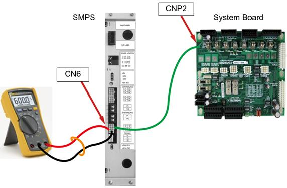
그림 1.15 시스템보드(BD530)의 DC 24V전원연결 및 전압확인 방법
(2) CPUERR, EXOUT 신호에 이상이 있는지 확인하십시오.
메인보드는 몇 가지의 시스템적 에러상황이 발생할 경우(정전, 서보에러 등) CPUERR 또는 EXOUT신호를 발생시킵니다. 이 신호는 시스템보드에 전달되어 하드웨어적으로 모터ON명령을 차단합니다. 안전을 위하여 모터의 전원을 즉각적으로 제거하는 것입니다. 하지만 비정상적으로 이 신호가 생성되어 모터전원을 차단할 수 있습니다.
n 판단방법:
이러한 상황은 시스템보드의 7-세그먼트 표시를 보면 파악할 수 있습니다. 7-세그먼트는 현재 시스템보드로 CPUERR가 입력되고 있다는 것을 “H.”으로 표시합니다. 또한 시스템보드 중앙 부근에 CPUERR, EXOUT이라는 LED를 통해서도 에러상황을 파악할 수 있습니다(그림 6.21). 정상이라면 이들 LED는 점등상태이나 그렇지 않을 경우 소등상태가 됩니다.
그러나 이 신호가 아주 짧은 순간 간헐적으로 나타난다면 7-세그먼트와 LED를 통해서는 판단할 수 없습니다. 이러할 경우에는 DIP스위치 SW1을 이용하여 두 신호를 무시한 상태로 에러발생을 관찰해야 합니다. 신호를 무시하는 방법은 그림 6.21에서 보여지는 것과 같이 DIP스위치 SW1의 1번(CPUERR무시)과 2번(EXOUT무시) 핀을 ON시키면 됩니다. 이때 LED들은 모두 점등할 것입니다.
시스템을 재가동하여 에러가 사라진다면 이는 메인보드가 이들 신호를 생성하거나 CANS1커넥터/케이블의 이상입니다.
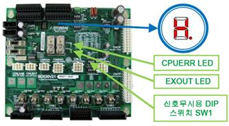
그림 1.16 CPUERR에러관련 시스템보드의 7-SEG, LED 및 DIP스위치의 위치
n 조치방법:
메인보드가 아무런 다른 에러표시 없이 이 신호를 생성하고 있다면 메인보드의 PLD버전을 확인하십시오. V0.7이상이 되어야 정상입니다. 메인보드 PLD버전이 정상일 경우 CANS1커넥터 및 케이블을 점검하십시오.
|
주의 : DIP 스위치 SW1의 1번(CPUERR 무시)와 2번(EXOUT 무시)은 비상시 안전과 관련된 기능을 무시하는 것이므로, 시험에만 사용하시고 곧바로 원상복귀 하십시오. 무시한 상태로 사용한다면 안전과 관련한 문제를 야기할 수 있습니다. |
(3) 안전스위치 및 신호배선을 확인하십시오.
안전스위치 입력이 메인보드가 인식하지 못할 정도로 순간 OFF되는 현상이 발생할 수 있습니다. 이것의 원인으로는
n 스위치의 고장
n 배선의 고장: 케이블의 까짐 등 훼손이 원인일 수 있습니다.
n 배선의 포설 문제:
동력선, 큰 전력이 소모되는 케이블과의 이격거리가 최소10cm이상이 되어야 합니다. 또는 금속재질의 판 등을 사용하여 전자적으로 차폐되어야 합니다.
|
주의 : 안전과 관련된 기능을 무시하는 것이므로, 시험에만 사용하시고 곧바로 원상복귀 하십시오. 무시한 상태로 사용한다면 안전과 관련한 문제를 야기할 수 있습니다. |
사용할 수 있는 안전스위치는 다음과 같은 것이 있으며 시스템보드를 통하여 연결하도록 되어 있습니다. 사용하고 있는 안전스위치류에 대하여 상기 내용을 점검하십시오.
|
종류 |
연결 방법 |
미사용 방법 |
|
비상정지 스위치 (외부) - 접점형 |
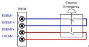 |
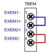 |
|
비상정지 스위치(외부) - 반도체형 |
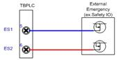 |
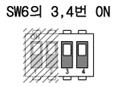 |
|
자동안전가드 - 접점형 |
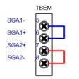 |
|
|
자동안전가드 - 반도체형 |
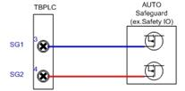 |
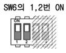 |
|
일반안전가드 |
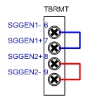 |
|
주의 : 안전과 관련된 기능을 무시하는 것이므로, 시험에만 사용하시고 곧바로 원상복귀 하십시오. 무시한 상태로 사용한다면 안전과 관련한 문제를 야기할 수 있습니다. |
기타 이 에러에 영향을 주는 안전 및 시스템운용과 관련된 스위치에는 다음과 같은 것들이 있습니다.
|
종류 |
연결 방법 |
미사용 방법 |
|
인에이블링 스위치(TP) |
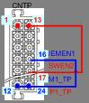 |
|
|
원격모드 입력 |
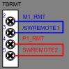 |
|
|
리밋스위치 |
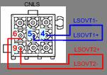 |
|
|
암간섭스위치 |
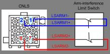 |
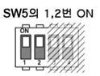 |
|
비상정지 스위치 (TP) |
시스템보드 – 티치펜던트간 배선 |
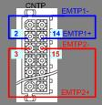 |
|
비상정지 스위치 (OP) |
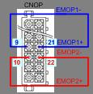 |
(4) 시스템보드 및 전장모듈을 확인하십시오.
n 케이블링(전선, 커넥터 등) 고장
전자접촉기가 설치되어 있는 전장모듈(PSM or PDM)과 모니터링 신호를 수집하는 시스템보드(BD530) 간의 케이블링을 확인합니다. 케이블 이름은 CNMC이며 시스템보드 상단 뒷면을 통하여 전장모듈로 들어 갑니다(그림 6.22). 이 케이블의 커넥터 접속상태를 점검하십시오.
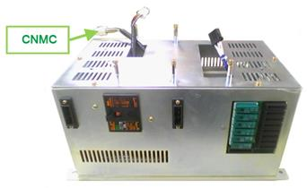
그림 1.17 전장모듈의 CNMC 케이블
n 시스템보드의 고장
시스템보드 내부에 있는 입력신호처리부의 고장도 에러발생의 원인이 될 수 있습니다. 시스템보드를 교체하여 확인하십시오.
n 전장모듈의 고장
전장모듈의 내부의 고장은 전장보드(BD5C2 or BD5C0), 전자접촉기(MC1, MC2), 전장보드와 전자접촉기 간의 배선으로 크게 구분할 수 있습니다. 그러나 이미 로봇이 설치된 현장에서 전장모듈 내부를 점검하는 것은 어려우므로 전장모듈을 교체하여 주십시오.
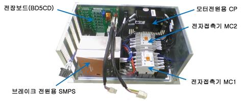
그림 1.18 전장모듈 내부구조
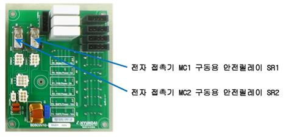
그림 1.19 전장보드